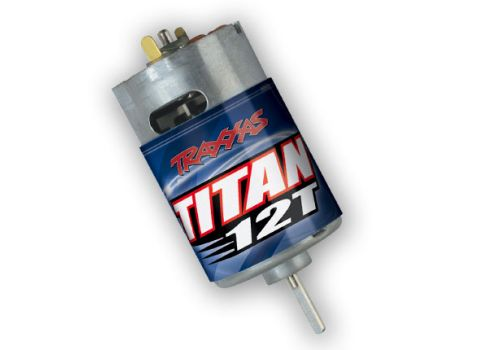
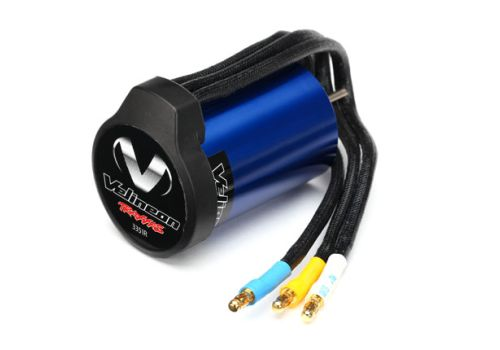
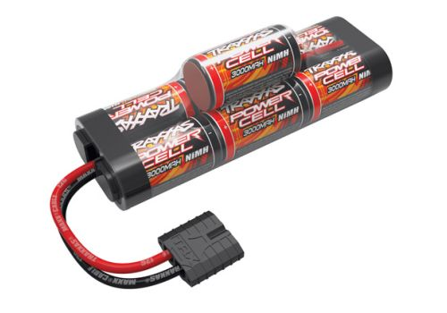
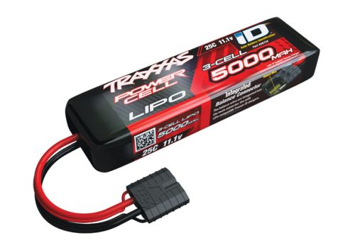
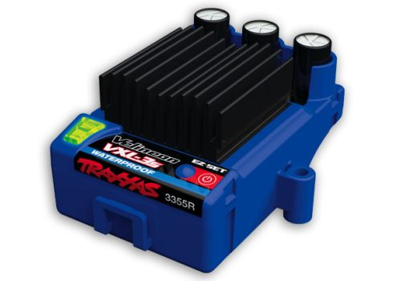
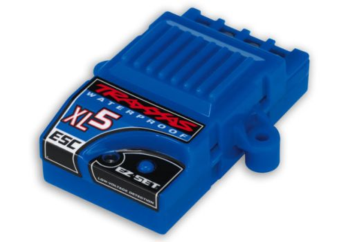

파워 시스템
모터와 배터리 — RC카의 심장을 이해합니다. 브러시드 vs 브러시리스, NiMH vs LiPo 완벽 비교.
한 줄 요약
파워 시스템 = 모터 + ESC + 배터리. 이 세 가지가 RC카의 성능을 결정합니다.
모터는 바퀴를 돌리는 힘을 만들고, 배터리는 그 에너지를 공급하며, ESC(전자 변속기)는 둘 사이에서 전력을 조절하는 중재자 역할을 합니다. 어떤 모터와 배터리를 조합하느냐에 따라 속도, 런타임, 파워가 완전히 달라집니다.
🔄 모터의 종류
RC카에 사용되는 전기 모터는 크게 브러시드(Brushed)와 브러시리스(Brushless) 두 가지로 나뉩니다. 각각의 구조와 특징을 자세히 알아보겠습니다.


브러시드 모터 (Brushed)
브러시드 모터는 가장 전통적인 DC 모터입니다. 내부에 브러시(brush)라는 탄소 접점과 정류자(commutator)라는 회전 접촉부가 있어, 브러시가 정류자 위를 물리적으로 스치면서 전류의 방향을 바꾸고 모터를 회전시킵니다.
장점:
- 저렴한 가격 — 구조가 단순하여 생산 비용이 낮습니다.
- 단순한 구조 — ESC도 간단한 것을 사용할 수 있어 전체 시스템 비용이 줄어듭니다.
- 초보자 친화적 — 파워가 적당해서 컨트롤하기 쉽습니다.
단점:
- 브러시 마모 — 물리적 접촉 부품이므로 사용할수록 닳아 교체가 필요합니다.
- 낮은 효율 — 마찰로 인해 에너지 손실이 발생하고, 열도 많이 발생합니다.
- 제한된 최고 속도 — 브러시리스 대비 RPM(회전수)이 낮습니다.
대표 제품: Traxxas Titan 12T (Stampede, Rustler 등에 기본 장착), 550 모터 (대형 트럭 모델용)
입문용 Traxxas 모델(Slash 2WD, Stampede 등)에 기본 장착되는 모터가 바로 브러시드 모터입니다. 처음 RC카를 접한다면 브러시드로 시작해 감을 익히는 것도 좋은 선택입니다.
브러시드 모터 참고 영상: Brushed vs Brushless Motors — What's the Difference? (CircuitBread) — 브러시드 모터의 내부 구조와 작동 원리를 영상으로 확인할 수 있습니다.
브러시리스 모터 (Brushless)
브러시리스 모터는 이름 그대로 브러시가 없는 모터입니다. 내부에 영구자석(permanent magnet)이 있고, ESC가 전자적으로 전류의 방향을 바꿔주는 전자 정류(electronic commutation) 방식을 사용합니다. 물리적 접촉이 없어 마모가 거의 없습니다.
장점:
- 고효율 — 마찰 손실이 없어 같은 배터리로 더 오래, 더 빠르게 달릴 수 있습니다.
- 무마모 — 브러시가 없어 수명이 매우 깁니다.
- 고출력 — 같은 크기에서 훨씬 높은 RPM과 토크를 냅니다.
- 발열 감소 — 효율이 높아 열 발생이 적습니다.
단점:
- 높은 가격 — 모터 자체도 비싸고, 전용 ESC도 필요합니다.
- 강한 파워 — 초보자에게는 제어가 어려울 수 있습니다(하지만 TSM이 도와줍니다!).
대표 제품: Traxxas Velineon 3500 (1/10 스케일용), Velineon 540XL (X-Maxx 등 대형 모델용)
Velineon 3500 스펙
| 항목 | 사양 |
|---|---|
| KV 값 | 3500 KV |
| 센서 방식 | 센서리스 (Sensorless) |
| 방수 | 방수 지원 |
| 호환 ESC | VXL-3s |
| 적용 모델 | Slash 4x4 VXL, Rustler VXL 등 |
Traxxas 모델명에 "VXL"이 붙으면 브러시리스 버전입니다. 예를 들어 "Slash 4x4"는 브러시드, "Slash 4x4 VXL"은 브러시리스 모터 탑재 모델입니다.
브러시리스 모터 참고 영상: Brushless Motor — How They Work (The Engineering Mindset) — 브러시리스 모터가 왜 더 효율적인지 시각적으로 설명합니다.
브러시드 vs 브러시리스 비교
| 항목 | 브러시드 | 브러시리스 |
|---|---|---|
| 가격 | 저렴 (모터 + ESC 합쳐 $40~60) | 비쌈 (모터 + ESC 합쳐 $120~250) |
| 최고 속도 | 약 30~50 km/h | 약 60~160+ km/h |
| 효율 | 낮음 (약 75%) | 높음 (약 90% 이상) |
| 수명 | 짧음 (브러시 마모로 교체 필요) | 김 (마모 부품 없음) |
| 유지보수 | 브러시 교체 필요 | 거의 불필요 |
| 추천 대상 | 입문자, 예산 제한 시 | 속도/성능 중시, 업그레이드 원할 때 |
🔋 배터리의 종류
RC카에 사용되는 배터리는 크게 NiMH(니켈수소)와 LiPo(리튬폴리머) 두 종류가 있습니다. 둘 다 충전식 배터리지만, 성능과 관리 방법에 큰 차이가 있습니다.
NiMH 배터리
NiMH(Nickel-Metal Hydride, 니켈수소) 배터리는 오래전부터 RC카에 사용되어 온 배터리입니다. 안전하고 관리가 쉬워 입문자에게 적합합니다.
장점:
- 높은 안전성 — 과충전이나 과방전에도 LiPo보다 위험이 적습니다.
- 저렴한 가격 — LiPo 대비 절반 이하의 가격입니다.
- 간단한 관리 — 특별한 보관 조건이 필요 없습니다.
- 내구성 — 충격에 비교적 강합니다.
단점:
- 무거운 무게 — 같은 용량 대비 LiPo보다 훨씬 무겁습니다.
- 낮은 용량 — 에너지 밀도가 낮아 주행 시간이 짧습니다.
- 자연방전 — 사용하지 않아도 서서히 방전됩니다.
- 전압 강하 — 사용 중 전압이 빠르게 떨어져 후반부에 파워가 줄어듭니다.
대표 제품: Traxxas Power Cell NiMH
Traxxas Power Cell NiMH 스펙
| 항목 | 사양 |
|---|---|
| 전압 | 8.4V (7셀) |
| 용량 | 3000mAh |
| 커넥터 | Traxxas iD |
| 무게 | 약 370g |
NiMH vs LiPo 비교 영상: NiMH vs LiPo — What You Need To Know (Brennan Frederick)
LiPo 배터리
LiPo(Lithium Polymer, 리튬폴리머) 배터리는 현재 RC카 시장의 주류입니다. 가벼우면서도 높은 에너지 밀도와 강한 출력을 제공하여 고성능 주행에 최적화되어 있습니다.
장점:
- 가벼운 무게 — 같은 용량 대비 NiMH보다 30~40% 가볍습니다.
- 높은 용량 — 에너지 밀도가 높아 더 오래 주행할 수 있습니다.
- 강한 출력 — 높은 방전율(C레이팅)로 순간적인 고출력이 가능합니다.
- 안정적 전압 — 방전 끝까지 비교적 일정한 전압을 유지합니다.
- 자연방전 적음 — 보관 중 방전이 거의 없습니다.
단점:
- 관리 필요 — 전용 충전기, 보관 전압, LiPo 백(bag) 등 관리 항목이 많습니다.
- 위험성 — 과충전, 과방전, 물리적 손상 시 발화/폭발 위험이 있습니다.
- 높은 가격 — NiMH 대비 2~3배 비쌉니다.
대표 제품: Traxxas Power Cell LiPo
Traxxas Power Cell LiPo 스펙
| 항목 | 사양 |
|---|---|
| 전압 | 11.1V (3S) |
| 용량 | 5000mAh |
| 방전율 | 25C |
| 커넥터 | Traxxas iD |
| 최대 연속 방전 | 125A (5000mAh x 25C) |
LiPo는 반드시 전용 충전기를 사용하고, 보관 및 폐기 시 각별히 주의하세요! 잘못 다루면 발화 위험이 있습니다. 자세한 안전 수칙은 배터리 안전 페이지를 꼭 참고하세요.
LiPo 배터리 기초 영상: RC Basics: A Guide to LiPo Batteries (Metro Hobbies) — LiPo 배터리의 기초부터 안전한 충전/보관법까지 설명합니다.
NiMH vs LiPo 비교
| 항목 | NiMH | LiPo |
|---|---|---|
| 전압 | 셀당 1.2V (7셀 = 8.4V) | 셀당 3.7V (3S = 11.1V) |
| 무게 | 무거움 | 가벼움 (30~40% 경량) |
| 용량 | 보통 (2000~5000mAh) | 높음 (3000~8000mAh) |
| 가격 | 저렴 ($15~40) | 비쌈 ($40~120) |
| 안전성 | 높음 (관대한 편) | 주의 필요 (발화 위험) |
| 관리 난이도 | 쉬움 | 어려움 (전용 충전기, 보관 전압 관리 등) |
| 추천 대상 | 입문자, 어린이, 가벼운 주행 | 성능 중시, 레이싱, 경험자 |


🔋 Traxxas Power Cell 배터리 라인업
Traxxas는 모든 모델에 맞는 Power Cell iD 배터리 라인업을 제공합니다. iD 칩이 내장되어 EZ-Peak 충전기와 자동 호환됩니다.
NiMH 배터리
| 모델 | 전압 | 용량 | 셀 구성 | 형태 | 적합 모델 |
|---|---|---|---|---|---|
| 2925X | 7.2V | 1200mAh | 6셀 (2/3A) | 플랫 | TRX-4M, TRX-4MT 등 1/18 스케일 |
| 2923X | 8.4V | 3000mAh | 7셀 (Sub-C) | 플랫 | Slash, Rustler, Stampede 등 1/10 입문 |
| 2926X | 8.4V | 3000mAh | 7셀 (Sub-C) | 험프 | Slash, Rustler, Stampede 등 1/10 입문 |
| 2960X | 8.4V | 5000mAh | 7셀 (Sub-C) | 플랫 | 긴 주행 시간이 필요한 1/10 모델 |
| 2961X | 8.4V | 5000mAh | 7셀 (Sub-C) | 험프 | 긴 주행 시간이 필요한 1/10 모델 |
LiPo 배터리
| 모델 | 셀/전압 | 용량 | 방전율 | 최대 전류 | 적합 모델 |
|---|---|---|---|---|---|
| 2820X | 2S / 7.4V | 2200mAh | 25C | 55A | 1/16 스케일 (Mini E-Revo 등) |
| 2827X | 2S / 7.4V | 3800mAh | 25C | 95A | 1/10 가벼운 주행, 크롤러 |
| 2833X | 2S / 7.4V | 5000mAh | 25C | 125A | Slash, Rustler 등 1/10 범용 |
| 2843X | 2S / 7.4V | 5800mAh | 25C | 145A | Slash, Rustler 등 1/10 장시간 |
| 2849X | 3S / 11.1V | 4000mAh | 25C | 100A | VXL 모델, Slash VXL 등 |
| 2872X | 3S / 11.1V | 5000mAh | 25C | 125A | VXL 모델, Rustler VXL 등 |
| 2857X | 3S / 11.1V | 6400mAh | 25C | 160A | E-Revo, Sledge 등 고성능 |
| 2889X | 4S / 14.8V | 5000mAh | 25C | 125A | X-Maxx, Maxx (1개 장착) |
| 2890X | 4S / 14.8V | 6700mAh | 25C | 167A | X-Maxx (2개 = 8S), XRT |
⏱️ 예상 주행 시간 가이드
주행 시간은 운전 스타일, 지형, 모터 종류에 따라 크게 달라집니다. 아래는 대략적인 참고값입니다.
| 주행 스타일 | 평균 전류 | 3000mAh NiMH | 5000mAh 2S LiPo | 5000mAh 3S LiPo | 6700mAh 4S LiPo |
|---|---|---|---|---|---|
| 🐢 크롤링 (저속) | 2~5A | 35~90분 | 60~150분 | 60~150분 | 80~200분 |
| 🚗 캐주얼 주행 | 10~20A | 9~18분 | 15~30분 | 15~30분 | 20~40분 |
| 🏁 스포츠 주행 | 20~35A | 5~9분 | 8~15분 | 8~15분 | 11~20분 |
| 💥 풀 스로틀 배싱 | 35~60A | 3~5분 | 5~8분 | 5~8분 | 6~11분 |
주행 시간 계산법: 주행 시간(분) ≈ (배터리 용량 mAh ÷ 평균 소비 전류 mA) × 60
예: 5000mAh 배터리, 평균 20A 소비 → 5000 ÷ 20000 × 60 = 약 15분
배터리 2개를 교대 사용하면 총 주행 시간을 2배로 늘릴 수 있습니다! 🔄
🔌 Traxxas 충전기
| 충전기 | 충전 전류 | 지원 배터리 | 특징 |
|---|---|---|---|
| EZ-Peak Plus | 최대 4A | NiMH / 2S~3S LiPo | iD 자동 인식, 밸런스 충전 |
| EZ-Peak Dual | 최대 8A (×2포트) | NiMH / 2S~3S LiPo | 2개 동시 충전, iD 자동 인식 |
| EZ-Peak Live Dual | 최대 12A (×2포트) | NiMH / 2S~4S LiPo | LCD 디스플레이, Bluetooth, 고속 충전 |
4S LiPo 배터리는 EZ-Peak Live 이상의 충전기가 필요합니다! 기본형 EZ-Peak Plus는 3S까지만 지원하므로, X-Maxx(8S) 사용자는 반드시 EZ-Peak Live Dual을 사용하세요.
⚡ ESC와 모터/배터리 매칭
ESC(Electronic Speed Controller, 전자 변속기)는 배터리의 전력을 받아 모터에 적절히 공급하는 허브 역할을 합니다. 송신기에서 보내는 스로틀 신호에 따라 모터에 전달되는 전류량을 조절하여 속도를 컨트롤합니다.
ESC를 선택할 때는 반드시 모터 종류와 배터리 전압을 맞춰야 합니다.
배터리 → ESC → 모터 연결 구조
전력 공급원

전력 조절 + BEC 출력
구동력 생성

- 브러시드 모터용 ESC는 브러시리스 모터를 구동할 수 없고, 그 반대도 마찬가지입니다.
- ESC에는 최대 지원 전압(셀 수)이 정해져 있으므로, 이를 초과하는 배터리를 사용하면 안 됩니다.
Traxxas ESC 예시:
- XL-5 — 브러시드 전용 ESC. NiMH 또는 2S LiPo까지 지원. 입문용 모델에 기본 장착.
- VXL-3s — 브러시리스 전용 ESC. 최대 3S LiPo(11.1V)까지 지원. 1/10 스케일 VXL 모델에 사용.
- VXL-6s — 브러시리스 전용 ESC. 최대 6S LiPo(22.2V)까지 지원. X-Maxx 등 대형 모델용.
- VXL-8s — 브러시리스 전용 ESC. 최대 8S LiPo까지 지원. 최고급 파워 시스템.
ESC의 최대 전압 이상의 배터리를 연결하면 ESC가 타버릴 수 있습니다! 예를 들어 VXL-3s(최대 3S)에 4S LiPo를 연결하면 ESC가 즉시 파손됩니다. 반드시 ESC의 최대 지원 셀 수를 확인하고 그 이하의 배터리를 사용하세요.
🔌 Traxxas iD 커넥터
Traxxas iD 커넥터는 Traxxas만의 고유한 배터리 인식 시스템입니다. 배터리에 내장된 작은 칩이 배터리의 종류(NiMH/LiPo), 셀 수, 용량 등의 정보를 저장하고 있습니다.
어떻게 작동하나요?
- iD 배터리를 Traxxas EZ-Peak 시리즈 충전기에 연결하면, 충전기가 자동으로 배터리 종류를 인식합니다.
- 배터리 종류에 맞는 최적의 충전 모드(NiMH/LiPo)와 충전 전류를 자동 설정합니다.
- 과충전이나 잘못된 모드로 충전하는 실수를 방지해 줍니다.
- 충전 완료 시 자동으로 충전을 멈춥니다.
별도의 설정 없이 배터리를 꽂기만 하면 되므로, 특히 초보자에게 매우 편리한 시스템입니다.
iD 커넥터 배터리 + EZ-Peak 충전기 조합이면 초보자도 안전하게 충전할 수 있습니다. 충전 모드를 잘못 선택할 걱정이 없어 LiPo 배터리도 안심하고 충전 가능합니다.
🎯 추천 파워 조합
레벨에 맞는 파워 시스템 조합을 추천합니다. 모터, ESC, 배터리를 함께 선택해야 최적의 성능을 낼 수 있습니다.
ESC: XL-5
배터리: NiMH 8.4V 3000mAh
최고 속도 약 30~50 km/h. 안전하고 저렴하며 관리가 쉬워 처음 시작하기에 완벽한 조합입니다.
ESC: VXL-3s
배터리: LiPo 2S 7.4V 5000mAh
최고 속도 약 60~100+ km/h. 입문 과정을 마치고 본격적인 성능을 경험하고 싶을 때 추천합니다.
ESC: VXL-6s
배터리: LiPo 4S 14.8V 6700mAh x 2
최고 속도 약 80~130+ km/h. X-Maxx 같은 대형 몬스터 트럭을 위한 최상위 파워 시스템입니다.
관련 영상
영상으로 파워 시스템의 차이를 눈으로 확인해 보세요.
모터 비교
- Brushed vs Brushless Motors — What's the Difference? (CircuitBread) — 브러시드와 브러시리스의 구조적 차이를 쉽게 설명합니다.
- Brushless Motor — How They Work (The Engineering Mindset) — 브러시리스 모터의 작동 원리를 시각적으로 보여줍니다.
배터리 가이드
- NiMH vs LiPo — What You Need To Know (Brennan Frederick) — 두 배터리 타입의 실제 성능 차이를 비교합니다.
- RC Basics: A Guide to LiPo Batteries (Metro Hobbies) — LiPo 배터리 입문 가이드.
Traxxas 파워 시스템 리뷰
- How to Calibrate Traxxas ESC (Traxxas 공식) — VXL-3s ESC의 기능과 설정법을 소개합니다.
- Traxxas iD EZ-Peak Dual Charger Review (LIFE N 3D) — iD 배터리와 EZ-Peak 충전기 사용법.
자주 묻는 질문
브러시드에서 브러시리스로 업그레이드하려면?
브러시드에서 브러시리스로 업그레이드하려면 모터와 ESC를 함께 교체해야 합니다. 브러시리스 모터는 브러시드 ESC로는 구동할 수 없기 때문입니다.
Traxxas의 경우, 각 모델별로 브러시리스 업그레이드 키트를 판매합니다. 예를 들어 Slash 2WD의 경우 "Velineon VXL-3s Brushless Power System"을 구매하면 모터(Velineon 3500) + ESC(VXL-3s)가 세트로 포함되어 있어 간편하게 업그레이드할 수 있습니다.
업그레이드 후에는 LiPo 배터리를 사용할 수 있게 되어 속도와 런타임이 크게 향상됩니다.
LiPo 배터리 C레이팅이 뭔가요?
C레이팅(C-Rating)은 배터리가 안전하게 방전할 수 있는 최대 전류의 배율을 나타냅니다.
계산법: 최대 연속 방전 전류 = 용량(Ah) x C레이팅
예시: 5000mAh(5Ah) 배터리에 25C라면 → 5 x 25 = 125A까지 연속 방전 가능.
C레이팅이 높을수록 순간적으로 더 많은 전류를 공급할 수 있어 가속 성능이 좋아집니다. 하지만 실제로는 모터와 ESC가 요구하는 전류를 충분히 감당할 수 있는 수준이면 됩니다. 일반적으로 RC카용 LiPo는 25C~50C 정도면 충분합니다.
배터리 용량(mAh)이 크면 뭐가 좋은가요?
mAh(밀리암페어시)는 배터리의 총 에너지 저장량을 나타냅니다. 쉽게 말해 연료탱크의 크기라고 생각하면 됩니다.
용량이 크면:
- 주행 시간이 길어집니다 — 3000mAh보다 5000mAh 배터리가 약 60% 이상 더 오래 달릴 수 있습니다.
- 고출력 상황에서도 여유 있습니다 — 급가속이나 오르막에서도 안정적으로 전력을 공급합니다.
단점도 있습니다:
- 무거워집니다 — 무게 증가로 가속과 핸들링에 영향을 줄 수 있습니다.
- 충전 시간이 길어집니다 — 용량이 크면 그만큼 충전에 더 오래 걸립니다.
- 가격이 높아집니다 — 대용량 배터리일수록 비쌉니다.
자신의 주행 패턴(짧은 주행 vs 장시간 주행)에 맞게 용량을 선택하는 것이 좋습니다.
관련 용어
이 페이지에서 다룬 핵심 용어들을 용어 사전에서 더 자세히 확인할 수 있습니다.